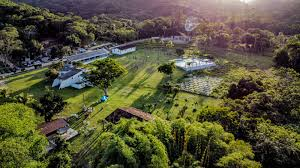

Educacao: Ensino tecnologico e Teologico.
Acampamento: Todos os anos realizamos acampamentos.
Eventos: Disponibilizamos nosso local para eventos.
SDG
Educacao: Ensino tecnologico e Teologico.
Acampamento: Todos os anos realizamos acampamentos.
Eventos: Disponibilizamos nosso local para eventos.
SDG
Um espaço para cultivar, guardar e proclamar o evangelho.

Educacao: Ensino tecnologico e Teologico.
Acampamento: Todos os anos realizamos acampamentos.
Eventos: Disponibilizamos nosso local para eventos.
SDG
Os Leamans, como são conhecidos por onde passam, chegaram ao Brasil em 2013, quando o Pastor Douglas veio servir em seminários, por meio da pregação e do ensino, com foco em aconselhamento bíblico. Com o tempo e com uma providência incrível, Deus permitiu que o Projeto Soli Deo Gloria nascesse na mesma propriedade onde Douglas nasceu. O Projeto tem sido capaz, pela graça de Deus, de expandir oportunidades para declarar a glória de Deus por meio do ensino fiel da Palavra de Deus. É incrível ver a bênção do Senhor em cada detalhe deste trabalho. Soli Deo Gloria!


| Nome | Idade | Local |
|---|---|---|
| João Victor | 23 | Recife |
| Pedro Madruga | 23 | Recife |
| Alisson | 19 | Recife |
| Arthur Montenegro | 18 | Panama |
| Gabriel Rodrigues | 18 | Recife |
| Lucas Oki | 23 | Japao |
| Samuel | 18 | Parana |
| SEG | TER | QUA | QUI | SEX | SAB | DOM |
|---|---|---|---|---|---|---|
| 1 | 2 | 3 - Acampamento SDG | 4 - Acampamento SDG | 5 - Acampamento SDG | 6 | 7 |
| 8 - Tito 2 | 9 | 10 | 11 | 12 - Futuros Homens | 13 - Futuros Homens | 14 |
| 15 | 16 - Tito 2 | 17 | 18 | 19 - Festival Esportivo | 20 - Festival Esportivo | 21 |
| 22 | 23 - English Camp | 24 - English Camp | 25 - English camp | 26 | 27 | 28 - Garage Sale SDG |